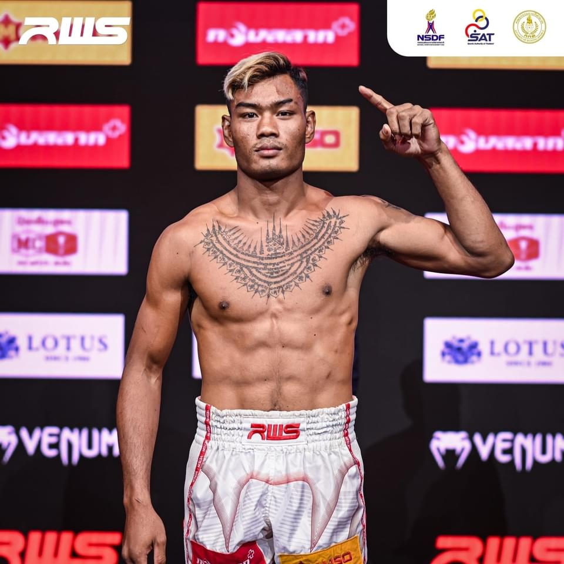
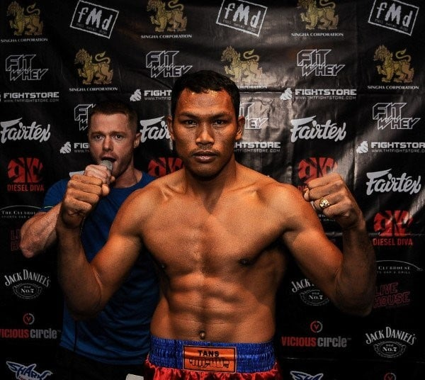
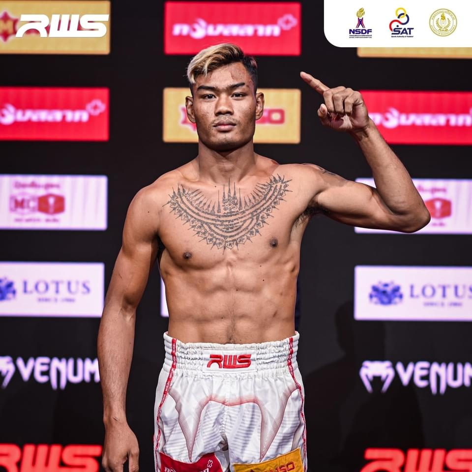
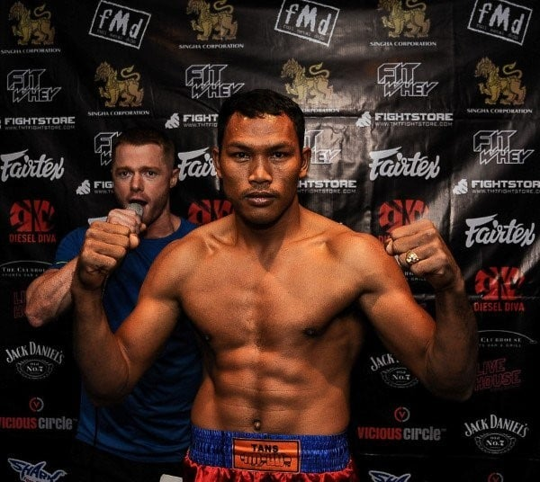
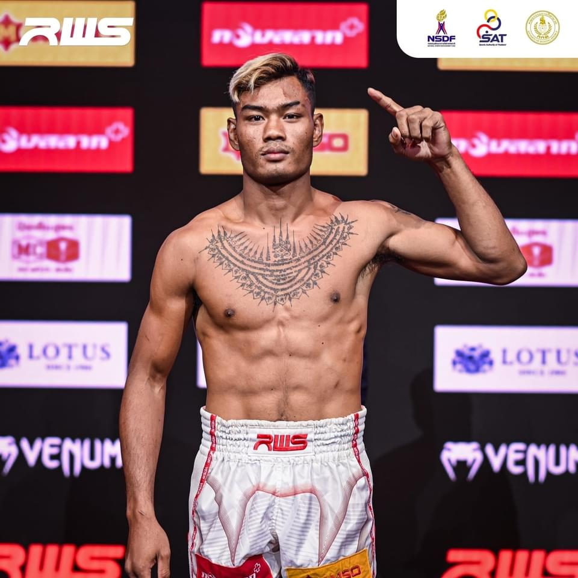
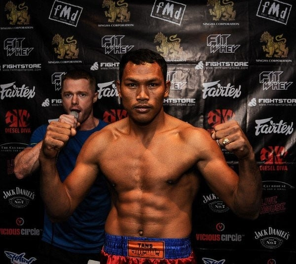

What is Muay Thai or Thai Boxing?
Muay Thai, often referred to as Thai Boxing, is more than just a martial art; it’s a reflection of Thailand’s history and culture. Known as the “Art of Eight Limbs,” it is a testament to the human body’s potential in combat. The body becomes a living weapon: hands mimic the sword and dagger, shins and forearms act as armor, elbows strike like maces, and legs swing like axes. This martial art demands unity of the body, with knees and elbows always seeking an opening, always prepared to strike. This intricate dance of strikes and moves is not just about physical prowess; it’s a blend of technique, discipline, and artistry, deeply rooted in Thai traditions. However, the precise origins of Thailand Muay Thai are debated by scholars, primarily because a significant portion of its history was lost during the 14th century when the Burmese ransacked Ayudhaya, the capital city of Siam. Most of the written records were destroyed, and the few that survived are now treasured as national artifacts, preserving the heritage of Thai culture. First, we’ll take you through the history of Muay Thai (and how it’s linked to Thailand’s history). Then, we’ll come back to the present and talk about current-day Muay Thai
มวยไทยซึ่งมักเรียกกันว่ามวยไทย เป็นมากกว่าศิลปะการต่อสู้ แต่ยังสะท้อนประวัติศาสตร์และวัฒนธรรมของประเทศไทยอีกด้วย มวยไทยซึ่งเป็นที่รู้จักในชื่อ “ศิลปะแห่งแขนทั้งแปด” เป็นเครื่องพิสูจน์ถึงศักยภาพของร่างกายมนุษย์ในการต่อสู้ ร่างกายกลายเป็นอาวุธที่มีชีวิต มือเลียนแบบดาบและมีดสั้น แข้งและปลายแขนทำหน้าที่เป็นเกราะ ข้อศอกโจมตีเหมือนกระบอง และขาแกว่งเหมือนขวาน ศิลปะการต่อสู้ชนิดนี้ต้องการความสามัคคีของร่างกาย โดยเข่าและข้อศอกจะหาช่องโจมตีอยู่เสมอ และเตรียมพร้อมที่จะโจมตีอยู่เสมอ การเต้นรำที่ซับซ้อนนี้ไม่ใช่แค่เรื่องของความแข็งแกร่งทางร่างกายเท่านั้น แต่ยังเป็นการผสมผสานระหว่างเทคนิค วินัย และศิลปะ ซึ่งหยั่งรากลึกในประเพณีของไทย อย่างไรก็ตาม นักวิชาการยังคงถกเถียงกันเกี่ยวกับต้นกำเนิดที่แท้จริงของมวยไทยของประเทศไทย เนื่องจากประวัติศาสตร์ส่วนสำคัญสูญหายไปในศตวรรษที่ 14 เมื่อพม่าปล้นสะดมกรุงศรีอยุธยาซึ่งเป็นเมืองหลวงของสยาม บันทึกที่เป็นลายลักษณ์อักษรส่วนใหญ่ถูกทำลาย และเอกสารบางส่วนที่ยังหลงเหลืออยู่ก็ได้รับการทะนุบำรุงให้เป็นโบราณวัตถุของชาติ เพื่อรักษาไว้ซึ่งมรดกทางวัฒนธรรมของไทย ขั้นแรก เราจะพาคุณไปรู้จักประวัติศาสตร์ของมวยไทย (และความเชื่อมโยงกับประวัติศาสตร์ของประเทศไทย) จากนั้น เราจะกลับมาที่ปัจจุบันและพูดคุยเกี่ยวกับมวยไทยในปัจจุบัน


Kun Khmer is a centuries-old martial art that originated in the Khmer Empire in the 9th century AD. It's derived from Bokator, a close-quarter combat system used during the Khmer Empire.
គុនខ្មែរ គឺជាក្បាច់គុណដែលមានអាយុកាលរាប់សតវត្សមកហើយ ដែលមានដើមកំណើតនៅខ្មែរ អាណាចក្រនៅសតវត្សរ៍ទី ៩ នៃគ។ វាបានមកពីល្បុក្កតោ ជាវគ្គជិត ប្រព័ន្ធប្រយុទ្ធដែលប្រើក្នុងសម័យអាណាចក្រខ្មែរ។
Kun Khmer is known for its kicking and elbow techniques, which generate power from hip rotation. The sport consists of four types of strikes: punches, kicks, elbows, and knee strikes.
គុនខ្មែរត្រូវបានគេស្គាល់តាមរយៈបច្ចេកទេសទាត់ និងកែង ដែលបង្កើតកម្លាំងបានពីការបង្វិលត្រគាក។ កីឡានេះមាន៤ប្រភេទគឺវាយកណ្តាប់ដៃ ទាត់ កែង និងជង្គង់។
The goal of Kun Khmer is to knock out an opponent, force a technical knockout, or win by points.
គោលដៅរបស់គុនខ្មែរគឺវាយចេញគូប្រកួតដោយបង្ខំបច្ចេកទេស ចាញ់ ឬឈ្នះដោយពិន្ទុ។
The Kun Khmer International Federation (KIF) and the National Olympic Committee of Cambodia (NOCC) are working to get Kun Khmer officially included in the Olympic Games. Their goal is to attract 75 countries to join the KIF.
សហព័ន្ធគុនខ្មែរអន្តរជាតិ (KIF) និងកីឡាអូឡាំពិកជាតិ គណៈកម្មាធិការជាតិកម្ពុជា (NOCC) កំពុងធ្វើការដើម្បីទទួលបានគុនខ្មែរជាផ្លូវការ រួមបញ្ចូលនៅក្នុងការប្រកួតកីឡាអូឡាំពិក។ គោលដៅរបស់ពួកគេគឺដើម្បីទាក់ទាញ 75 ប្រទេស ចូលរួម KIF ។